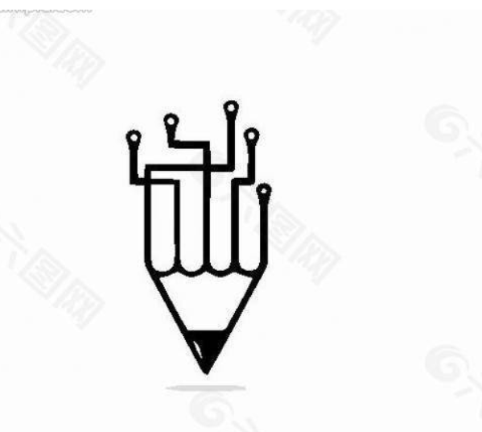

my logo:
| organizer | Activity time | Activity name | achievement |
| school | 3/12/2020 | Volunteer solicitation activities | Best Volunteer |
| Local government | 9/16/2019 | National Mathematics Competition | National Third Prize |
| Social organizer | 3/9/2023 | Scholarship qualification evaluation | third award |
Introduce an information system:
CRM